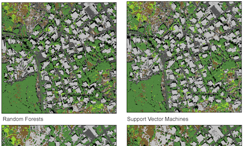

We are an urban analysis firm that uses spatial data, mapping and visualization
to gain a better understanding of how cities work.
to gain a better understanding of how cities work.

Neighbourhood Visualizer

Raster image classification: rasclass
Nuvu sudio: global warming


urbmet.org

NuVu studio
We build custom analysis systems centered around urban issues using:
- state of the art statistical and spatial analysis methods
- mostly open-source tools
- open-data
David and Daniel